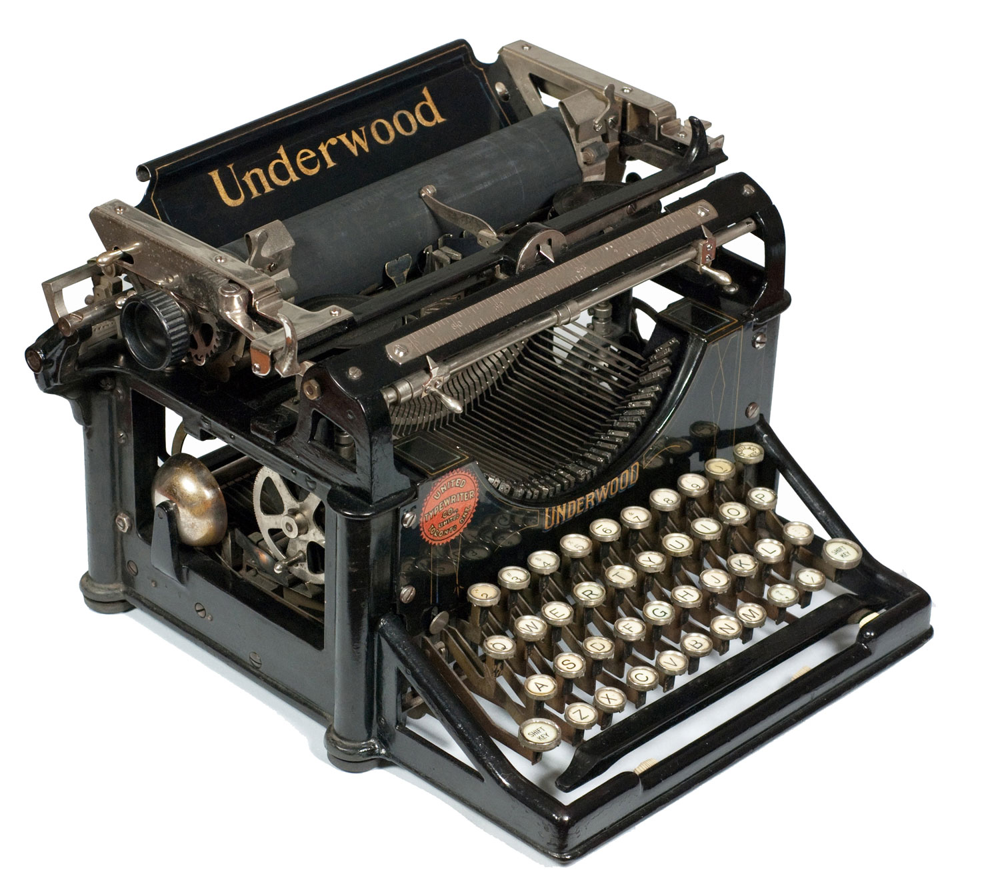

Selamat Datang di Bengkel Kami
Kami berspesialisasi dalam perbaikan dan restorasi mesin tik manual produksi tahun 1900 hingga 1980.

Keunggulan Restorasi Kami
- Menggunakan suku cadang orisinal atau fabrikasi presisi.
- Ditangani oleh teknisi mekanik dengan pengalaman puluhan tahun.
- Garansi kalibrasi ulang gratis selama 6 bulan.